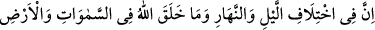

(Allah)’ın şânı ne yücedir!
“Allah, bunları” yani hallerinden herhangi biri anlatılan mezkûr Güneş ve Ay’ı,
“ancak hak ile” yüce hikmetinin gereğine riâyet ederek “yaratmıştır.” Bunlar da,
yılların, vakitlerin ve bunlara bağlı olarak yaşayışlarının, muâmelelerinin ve
ibâdetlerinin bilgisine dâir az önce işâret edilen hususlardır. Onun yaratmasında asla
boş ve mânâsız bir şey yoktur.
Hikâye edilir ki bir adam bir pislik böceği gördü ve: “Allah şunu niye yaratmış ki?
Güzel şekli için mi, yoksa güzel kokusu için mi?!” dedi. Sonra Allah onu öyle bir
belâya mübtelâ etti ki doktorlar tedavîden âciz kalarak tedâvîsini bıraktılar.
Bir gün oradan geçen bir doktorun kapıda sesini işitti. “Onu getirin hastalığıma bir
baksın.” dedi. Ona:
“Mâhir doktorlar bile senin tedâvinden âciz kalmışken yolcuyu ne yapacaksın?”
dediler. O:
“Onu muhakkak bana getirin.” dedi. Doktor gelip de yarayı görünce pislik böceği
istedi. Orada bulunanlar gülüştüler.
Bunun üzerine hasta önceden söylediği sözü hatırladı ve “İstediğini getirin! Adam ne
yaptığını biliyor.” dedi.
Doktor böceği yaktı ve külünü yaranın üzerine koydu. Allah’ın izniyle yarası iyileşti.
Adam orada bulunanlara:
“Allah Teâlâ bana en değersiz mahlûkatının en kıymetli bir ilaç olduğunu anlatmak
istedi.” dedi. Şüphesiz O’nun her yarattığında bir hikmet vardır.
Allah, kâinatın yaratılışındaki hikmeti “bilen” ve bu bilgiyi yaratıcısının işlerine delil
getiren “bir kavim için” birliğine ve kudretine delâlet eden yaratma ile ilgili mezkûr
“âyetleri açıklar.” Başka îzah ve açıklamalar ilâve ederek birbiri ardından onları
zikreder.
Âyette bilenler özellikle zikredilmiştir. Çünkü üzerinde düşünerek onlardan
faydalananlar onlardır.
6. Şüphesiz gece ve gündüzün birbiri ardınca değişip durmasında, Allah’ın
göklerde ve yerde yarattığı şeylerde takvâ sâhibi bir toplum için nice alâmetler
vardır.